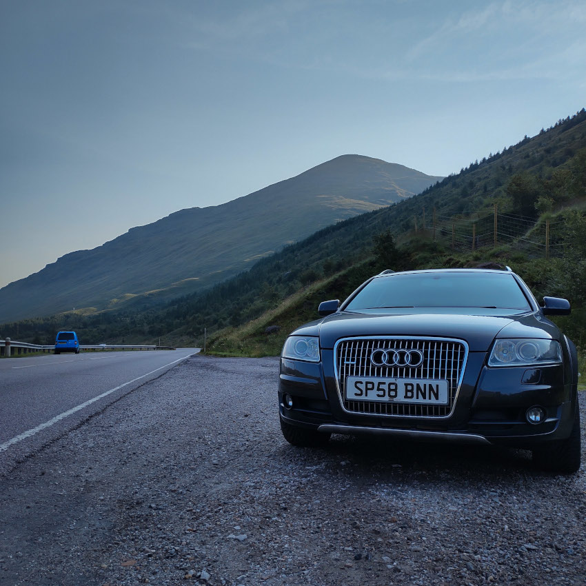

His Finest Moments
In August 2021, I finally made the decision to purchase my very own cargo donkey. At 22 years of age, it had taken me a while to commit to the taskhorse lifestyle but after a quiet Monday of browsing AutoTrader, I found my old dream car from 2008. There was no decision making process, a swift purchase the same day is all it took for this stunning Audi A6 Allroad Quattro wagon to be mine. Yes, I am incredibly lucky to have my dream car as my first wagon so let’s run that 120,000 miles to 1,200,000!
|  My baby at Beinn an Lochain |
Audi A6 Allroad Quattro25th of September 2008 (58) 2.7 Testosterone Diesel Injection (TDI) 2698cc, 6 Cylinder, 24 Valve Automatic Transmission, 4 Wheel Drivetrain, 6 Speed 80l Fuel Capacity, 563 Mile Range, 32mpg Urban 380Nm, 280ft-lb Torque, 230gkm-1 CO2 Estate, 5 Door, 565l Cabin Capacity |